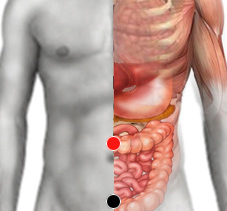

Cólera
Par
colon transverso - vejiga
colon transverso - hígado
dorsal 7 - dorsal 7

Generalidades:
Provoca Hepatitis G (ARN). Produce diarrea copiosa y deshidratación, también se puede presentar vómito. Común en niños. Causa de Anorexia.
Bacteremia por la bacteria gram negativa Vibro Cholerae.
Transmisión
Falta de higiene: Agua, manos, alimentos contaminados por heces. Sobre todo se da en comunidades que carecen de recursos como agua potable y las medidas de limpieza. El cólera representa aún una amenaza para la salud humana a nivel mundial.